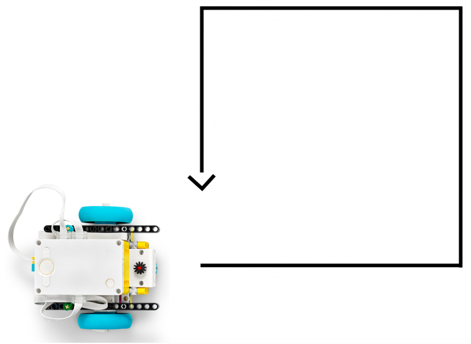
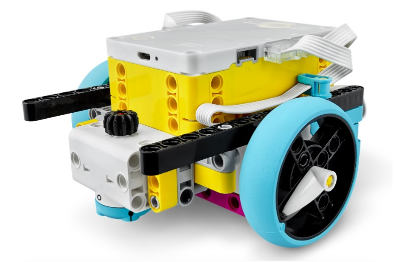
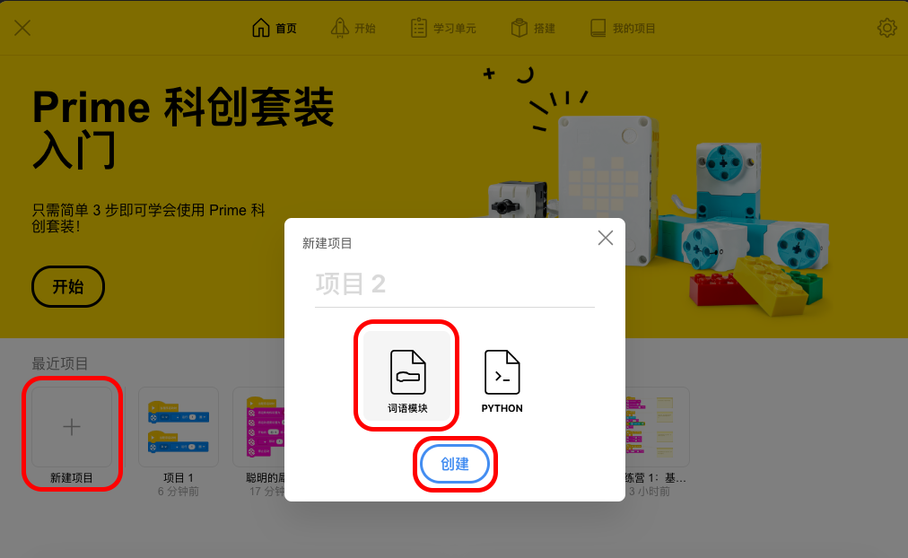
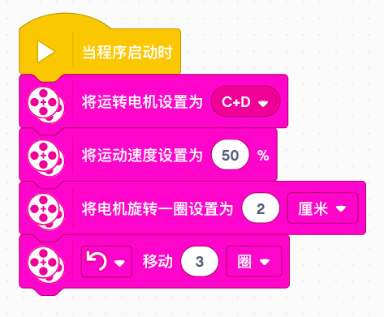
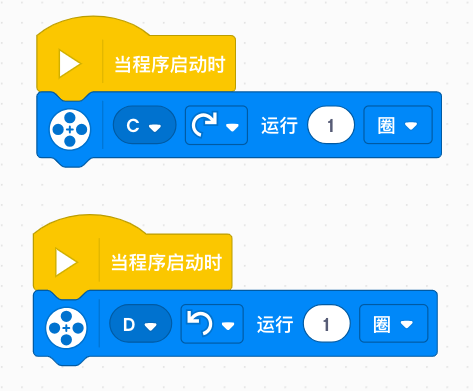
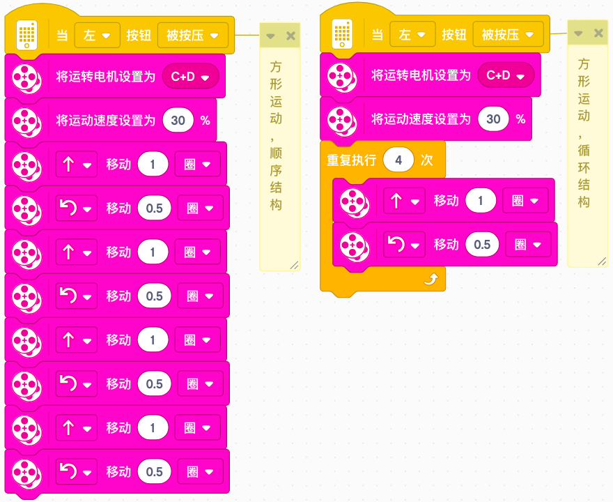
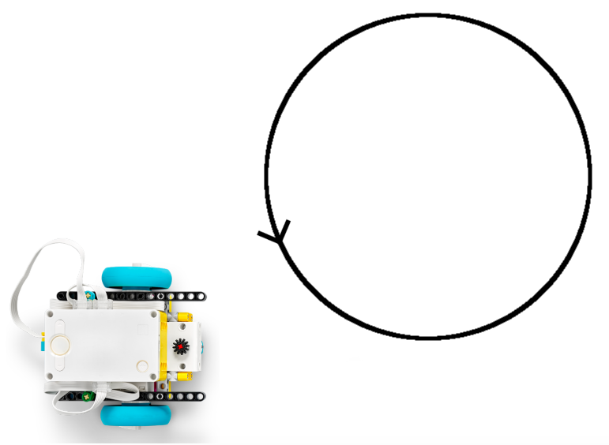
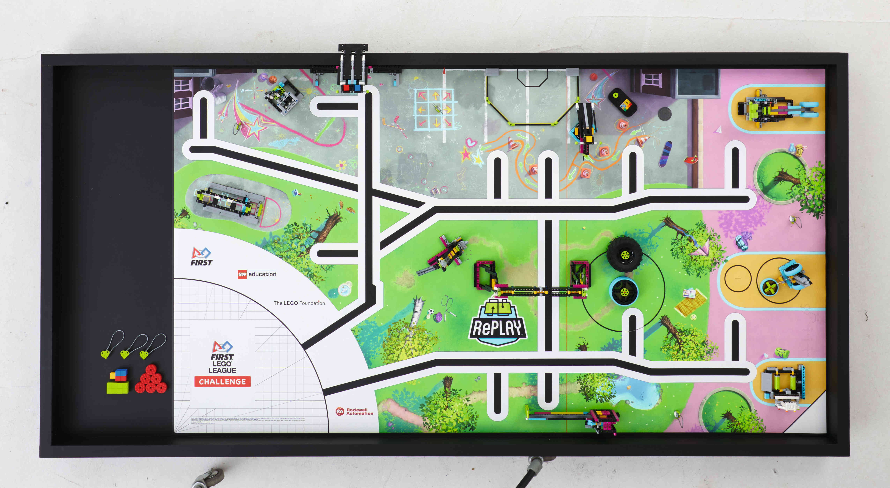

基础运动（Basic Movement）

schedule90 分钟
stars初级（Beginner）
face3-6 年级
一. 模型搭建（Construct）
二. 新建项目（Project）

1. 在电脑桌面，双击运行 Spike 程序。
2. 点击「新建项目」，给项目命名为「基础运动」。
三. 连接机器人模型和项目

1. 按下「智能集线器」上的开关按钮，并打开「蓝牙」功能。
2. 在 SP 软件中，按下连接，并选择「通过蓝牙连接」。
四. 给机器人模型编程（Program）

4.1. 任务一：双轮控制

1. 【任务】双轮控制小车前进、后退、左转、右转。
4.2. 任务二：单轮控制

1. 【任务】单轮控制小车前进、后退、左转、右转。
2. 【问题】什么是并行程序?
4.3. 任务三：方形运动
1. 【项目任务】让小车绕方形运动。
2. 【问题】什么是循环指令?
4.3. 任务三：方形运动

【循环指令】重复执行特定的程序块。
4.4. 任务四：圆形运动

1. 【项目任务】让小车绕圆形运动。
4.5. 任务五：FLL 场地任务

1. 【场地任务】让小车在 FLL 场地上绕行一周。
五. 分享、奖励、提问

1. 【分享】分享你的各种想法吧。
2. 【奖励】完成个人或团队任务，各奖励 10 分。
3. 【提问】每人提一个问题。
六. 拓展（Extend）

1. 【模型拓展】个性化改装模型。
2. 【编程拓展】个性化改写程序。